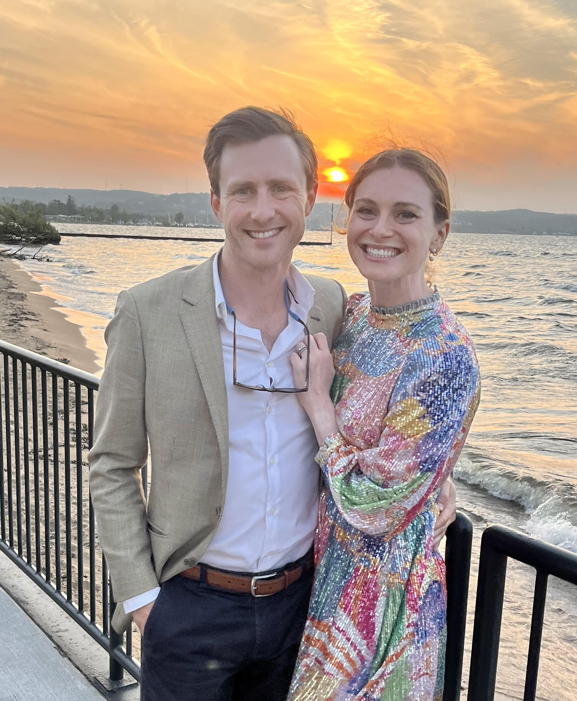

Who We Are
West Neck Holdings was founded by Nat Duncan, bringing together expertise in operations, finance, and business development. Our approach combines hands-on operational experience with strategic financial management to ensure sustainable growth for the businesses we acquire.
